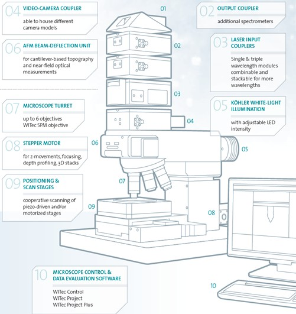

|
模块化
|

图 1：WITec alpha300 模块示意图
所有 WITec 显微镜均采用高品质的模块化系统，具有卓越的光学通量、无与伦比的信号灵敏度以及出色的成像能力。贯穿始终的共同点是，所有系统都基于相同的硬件架构。无论何时需要，都可以为任何系统（即使是最基础的配置）轻松升级附加功能和设备，使我们的客户能够跟上未来挑战的步伐。
WITec 系统包含多个组件，这些组件适用于仪器的多种配置（例如 AFM 和扫描近场光学显微镜配置）。因此，系统可以随时完全升级以包含 AFM 或 SNOM 功能。特别是，将拉曼显微镜与 AFM 结合使用，可以通过共聚焦拉曼显微镜获得的化学信息与原子力显微镜在相同样品位置上获得的超高横向和形貌分辨率直接关联起来，只需旋转转塔即可实现。 SNOM 允许超越衍射极限对样品进行光学研究。
对于拉曼系统，始终可以添加额外的激发激光波长、探测器、光谱仪，或高级模块如 TrueSurface，用于轮廓测量的拉曼测量。
联系 WITec 获取更多详细信息。